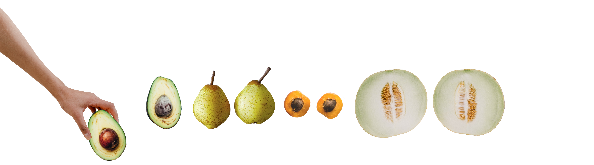

1 out of 8
U.S. women will get breast cancer.
With that statistic and current numbers, that means that about 41 million women in the United States will get breast cancer in their lifetime.
#1
breast cancer is the world's most common cancer in women.
Women from all over the world, in all different countries and levels of modernzation, get affected by breast cancer each year, for it is the number one most common cancer in women worldwide.
a woman is diagnosed with breast cancer in the U.S.
That means that in one day, 720 women in the U.S. are diagnosed with breast cancer.
3.5 million
breast cancer survivors in the U.S.
Now that is just an awesome fact, isn't it?
...and did you know that
men
can get breast cancer, too?
Yes, men can get breast cancer, too. It is extremely rare, as only 1 in 1,000 men will ever be diagnosed with breast cancer. It is usually diagnosed in men over 50 years old. Men have a higher mortality than women do, because they are less aware of breast cancer affecting them or understanding a breast lump, which delays them seeking treatment.
Emma Sisk, 2020.